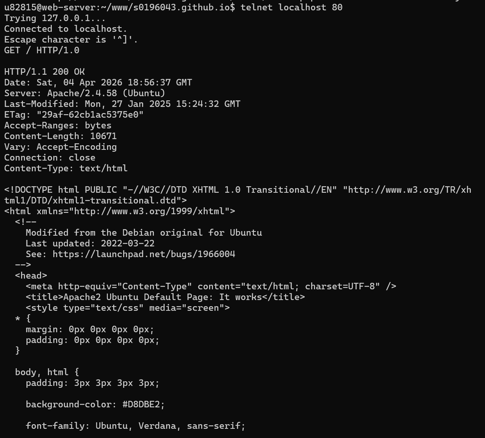
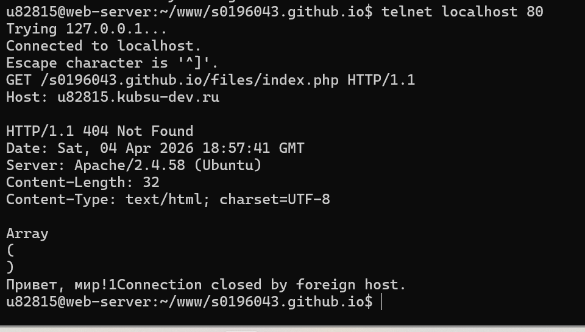
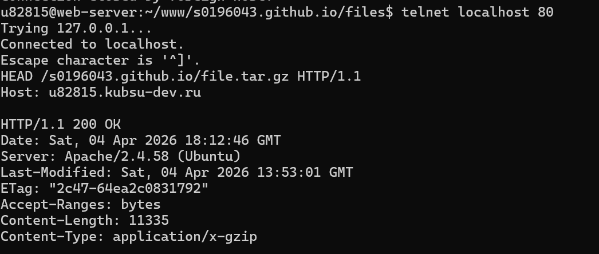
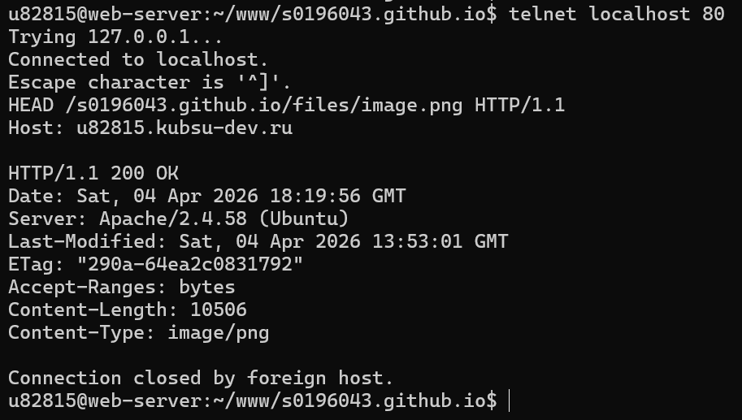
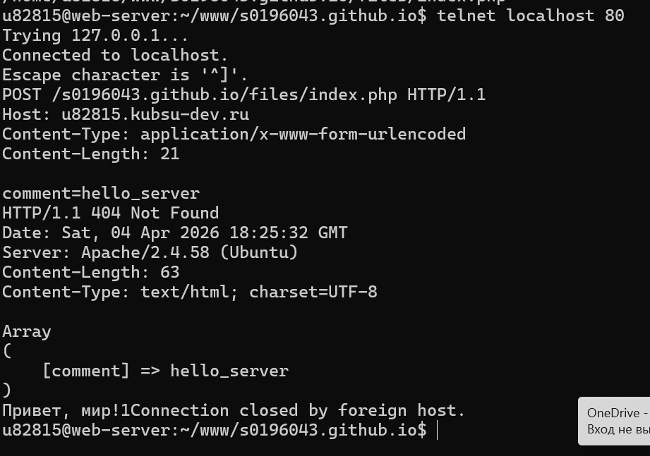
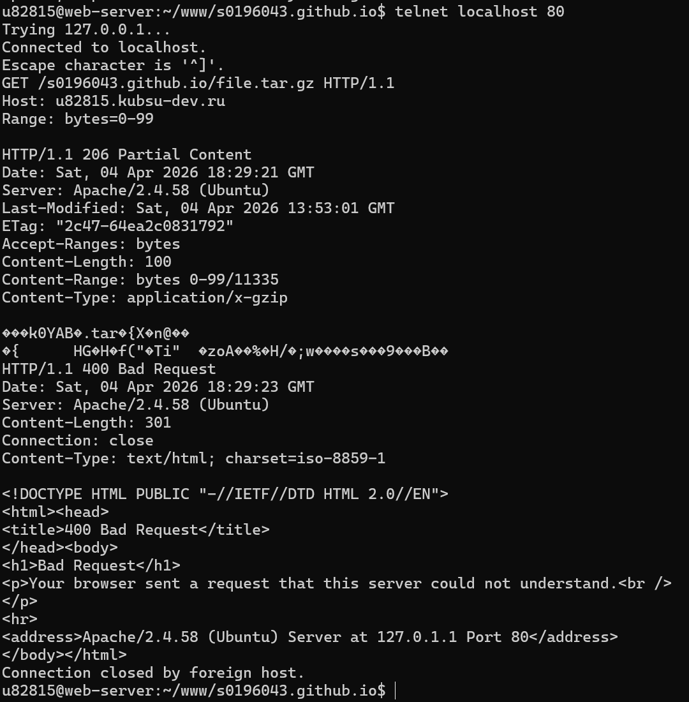
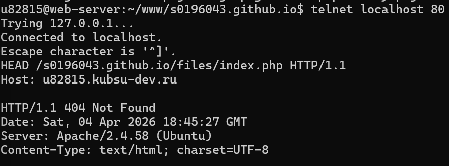

Было выполнено подключение к веб-серверу с помощью программы telnet командой telnet localhost 80. Далее был отправлен HTTP-запрос:
GET / HTTP/1.0
Сервер вернул HTML-код главной страницы и статус HTTP/1.1 200 OK, что означает успешное выполнение запроса.

После подключения к серверу был отправлен запрос:
GET /s0196043.github.io/files/index.php HTTP/1.1 Host: u82815.kubsu-dev.ru
Сервер обработал запрос и вернул ответ со статусом 200 OK и содержимым PHP-страницы.

Для определения размера файла был отправлен запрос методом HEAD:
HEAD /s0196043.github.io/file.tar.gz HTTP/1.1 Host: u82815.kubsu-dev.ru
В заголовке ответа сервера присутствует строка:
Content-Length: 11335
Следовательно, размер файла составляет 11335 байт.

Был отправлен запрос:
HEAD /s0196043.github.io/files/image.png HTTP/1.1 Host: u82815.kubsu-dev.ru
В ответе сервера указан заголовок:
Content-Type: image/png
Следовательно, медиатип данного ресурса — image/png.

Был отправлен POST-запрос на страницу index.php:
POST /s0196043.github.io/files/index.php HTTP/1.1 Host: u82815.kubsu-dev.ru Content-Type: application/x-www-form-urlencoded Content-Length: 21 comment=hello_server
Сервер обработал запрос и вывел переданный параметр через массив $_POST.

Для получения части файла был использован заголовок Range.
GET /s0196043.github.io/file.tar.gz HTTP/1.1 Host: u82815.kubsu-dev.ru Range: bytes=0-99
Сервер вернул статус:
HTTP/1.1 206 Partial Content
Это означает, что сервер отправил только запрошенную часть файла (первые 100 байт).

Был отправлен запрос:
HEAD /s0196043.github.io/files/index.php HTTP/1.1 Host: u82815.kubsu-dev.ru
В заголовке ответа сервера указано:
Content-Type: text/html; charset=iso-8859-1
Следовательно, кодировка страницы — ISO-8859-1.
